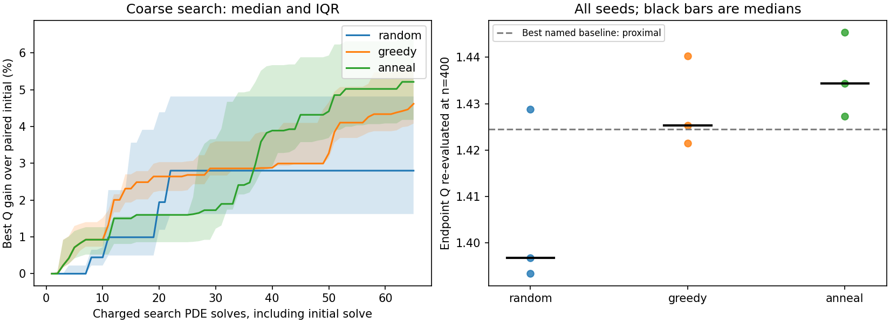
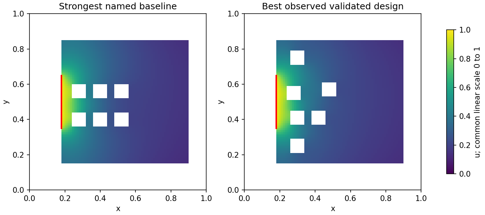

This is an exploratory finite-budget comparison. Gains use paired starts; method ranking uses all seeds. Source width 0.30 was chosen after the earlier pilot. The demo seeds have not been used to tune the present optimizer. Seed ranges and IQRs describe search variability, not confidence intervals for a global optimum. Mesh-stable means the change in the last two paired flux differences is below the configured fraction of the finest difference; it is a screening criterion, not a rigorous error bound. A fixed-square-size N sweep changes air area and membrane length across N. Keep comparisons within a case separate from comparisons between physical cases.
Status: complete. Paid solves by phase: {'search': 585, 'validation_fvm': 48, 'mechanism_fvm': 3}. Four initial analytical/linearity check solves are separate.
N=6, Bi=1, source=direct, width=0.3. Best observed validated design: anneal_81203; Q=1.4453678 at n=400.
| Method | Seeds | Median gain vs initial | Gain range | Median vs strongest named baseline | Stable paired mesh gaps | Complete budgets |
|---|---|---|---|---|---|---|
| random | 3 | 2.827% | [0.504, 7.082]% | -1.939% | 3/3 | 3/3 |
| greedy | 3 | 4.898% | [3.630, 6.817]% | 0.060% | 3/3 | 3/3 |
| anneal | 3 | 5.332% | [3.202, 8.320]% | 0.693% | 3/3 | 3/3 |


Fields are displayed at n=100; ranking uses n=400. The best observed design may be a named baseline. No global optimum is certified.
Independent FEM was not requested. See RUN.md to enable it.
The FEM and FVM solve the same polygon, using different assembly and meshes. Agreement supports numerical reliability; it does not validate anatomy.
| Case | Reflecting obstruction ΔQ | Activating hole walls ΔQ | Inner-wall Q | Outer-wall Q |
|---|---|---|---|---|
| direct_B1_N6 | -0.144580 | 0.516901 | 0.802255 | 0.622065 |
No-hole and reflecting-hole cases change resources and are explanatory diagnostics, not competing fixed-resource designs.